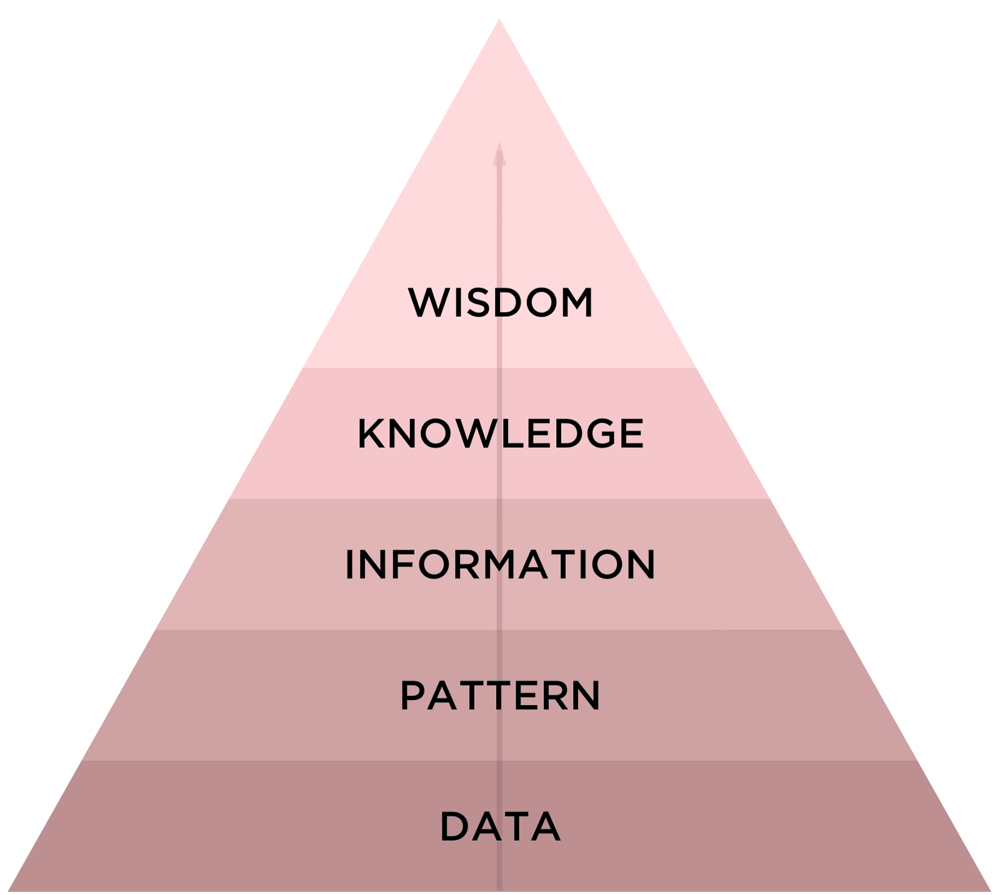

- Introdução
- Dados
- Big Data
- Coleta, Análise e Mineração
- Data Science
- Informação e Gestão da Informação
- Conhecimento
- Relevância para as organizações
Gabriel D'Luca, Vitor Lima
(IF973) Fundamentos de Sistemas de Informação
agosto – 2017
Roteiro
Roteiro

Introdução
- São observações documentadas ou resultados de uma medição
- Empresas já contratavam times de estatísticos e atuários desde o início
do século passado - Hoje, quase todas as instituições coletam dados sobre seus processos e usuários
Introdução
- Ao contrário dos dados, é composta por elementos mais palpáveis
Dados brutos- Passam por diversas manipulações
Introdução

Introdução

Introdução
- Envolve um escopo ainda maior do que a informação
- Apresenta características baseadas em experiências prévias
- Experiência e Aprendizagem
Dados
Dados
Pode-se entender um dado como um elemento da informação (um conjunto de letras ou dígitos) que, tomado isoladamente, não transmite nenhum conhecimento, ou seja, não contêm nenhum significado intrínseco
Kenneth Laudon, Jane Laudon
Representam eventos que ocorrem nas organizações ou em ambientes físicos antes de eles terem sido organizados em um formato que as pessoas possam entender e utilizar
Dados
- Possuem outras representações (imagens, áudios, etc)

Dados
Big Data
Coleta, Mineração e Análise
Coleta, Mineração e Análise
Dilúvio de dados
- Houve uma evolução drástica da infraestrutura para armanezagem e coleta de dados nos últimos 15 anos
- Um estudo da EMC (Burn-Murdoch, 2012) revela que a quantidade de dados armazenado em 2012 era de 2.8 ZB com previsões de chegar a 40 ZB em 2020

Análise de dados
- Análise é o processo de distinção das partes de um todo, com o objetivo de compreendê-lo melhor
- O objetivo da análise deve estar bem definido para que possa realmente auxiliar na tomada de decisões, exploração de oportunidades ou solução de problemas
- Esse método é largamente utilizado em diversas áreas, principalmente em negócios
Análise de dados
- Empresas já contratavam times de estatísticos e/ou atuários desde o início do século passado
- Os computadores modernos possibilitaram automatizar o cruzamento de dados, o que, consequentemente, permitiu que análises mais profundas fossem realizadas
- Essa análise de dados cada vez mais se tornava um poderoso meio para gerar informações que poderiam levar empresas a possuir vantagem competitiva
Informação
Previsão do consumo de itens em situações de emergência
- Em 2004, um ciclone tropical estava indo em direção ao Atlântico norte
- Dada a previsão de que o furacão atingiria a Flórida, os executivos do Wal-Mart decidiram testar algumas das suas novas armas para análise de dados (Hays, 2004) para prever quais itens seriam consumidos para reforçar o estoque em suas lojas
Previsão do consumo de itens em situações de emergência

Sede por informação
- Por causa de casos como esse, empresários do mundo todo viram grandes oportunidades e decidiram investir na coleta de informações
- Devido ao constante aumento da quantidade de dado sendo coletada, elas eram capazes de gerar informações cada vez mais confiáveis e completas

Mas afinal, o que é informação?

Informação
Informação é a resultante do processamento, manipulação e organização de dados, de tal forma que represente uma modificação no conhecimento do sistema que a recebe.
Informação
- De acordo com a teoria da comunicação, qualquer forma de interferência na comunicação pode ser considerada uma informação
Informação
- Uma variação importante identifica a informação como algo que pode ser comunicado por uma mensagem do emissor para um receptor capaz de compreender a mensagem
Informação
- No entanto, para melhor uso da informação na tomada de decisão, é importante que a informação seja completa, confiável, relevante, veríficavel, acessível e, uma vez que traz vantagem competitiva, segura
- Além disso, a informação deve cobrir uma área significativa, estar atualizada e disponibilizada para as pessoas corretas
Conhecimento
Relevância para as organizações

Referências
SETZER, V. W. (1999). Dado, Conhecimento, Informação e Competência. Disponível em: www.ime.usp.br/~vwsetzer/datagrama.html.
Acesso em: 20 ago. 2017.
HJORLAND, B. CAPURRO, R. (2007). O conceito de informação. Disponível em: https://www.theguardian.com/news/datablog/2012/
dec/19/big-data-study-digital-universe-global-volume. Acesso em: 20 ago. 2017.
PERRELLI, H. (2017). Sistemas de Informação para Iniciantes: tudo o que você queria saber mas tinha vergonha de perguntar. 1ª ed.